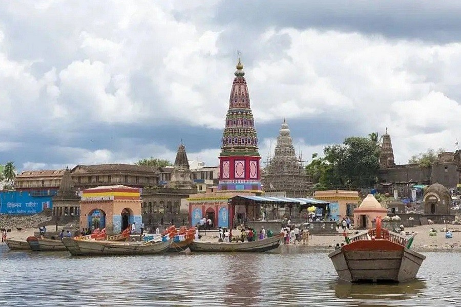

The Pandharpur Temple, located in the town of Pandharpur in Maharashtra, India, is a renowned pilgrimage site dedicated to Lord Vithoba (a form of Lord Krishna) and his consort Rukmini. The temple holds great religious significance, especially for Varkari sect devotees, who regularly visit the shrine to seek blessings. The temple's architecture is a blend of traditional Indian styles, featuring intricately carved pillars and a beautiful sanctum sanctorum housing the idol of Vithoba. The town of Pandharpur, often called the "Kashi of the South," is a center for spiritual and cultural activities, particularly during the major festivals of Ashadhi Ekadashi and Kartiki Ekadashi, when thousands of devotees gather for pilgrimage.
Historical Significance
The Pandharpur Temple holds immense historical and religious significance, primarily as the abode of Lord Vithoba, also known as Vithal, a form of Lord Krishna. The temple has been a prominent center of devotion for over a thousand years and is one of the most visited pilgrimage sites in India. It is deeply connected to the Varkari tradition, where devotees, known as Varkaris, undertake pilgrimages and chant devotional hymns dedicated to Vithoba. The temple has been historically important for uniting people across different castes and regions in their devotion.Pandharpur also holds significance because of its association with several saints and religious reformers, notably Sant Dnyaneshwar and Sant Tukaram, whose abhangas (devotional songs) and teachings are an integral part of the religious culture. The temple played a central role in spreading the Bhakti movement across Maharashtra, particularly through the influence of the Bhakti saints who sought to bridge social divisions and promote devotion to God. The temple's location and its festivals, such as Ashadhi Ekadashi and Kartiki Ekadashi, have further elevated its status as a historical and cultural landmark.
Architectural Features
The architectural features of the Pandharpur Temple reflect traditional Indian temple design, with a focus on intricate carvings and spiritual symbolism. The temple is constructed in the Hemadpanthi style, known for its use of stone without mortar, and features a large, well-defined sanctum sanctorum that houses the idol of Lord Vithoba. The idol is placed in the central hall, where devotees gather to offer prayers. The temple is surrounded by massive pillars, each beautifully carved with mythological figures and intricate designs, adding to the temple's grandeur. The temple’s entrance is marked by a large gate and torana, which is decorated with symbolic motifs. The Shikhara (spire) above the sanctum is another notable feature, typical of Hindu temple architecture, rising high to symbolize the connection between the divine and the earthly. Inside, the temple has several mandapas (halls), with beautifully crafted ceilings and pillars. Additionally, the temple complex includes a water tank, which holds sacred significance for pilgrims. The temple’s design harmonizes devotion and architectural beauty, making it an important spiritual and cultural landmark.
Best Time to Visit
Winter (October to February): This is the ideal time due to cool and pleasant weather, making it comfortable for outdoor activities and temple visits.
Avoid Summer (March to June): The heat can be intense, with temperatures often exceeding 40°C (104°F), making the visit uncomfortable.
Monsoon (June to September): While the weather is cooler, it can be inconvenient due to heavy rains, especially for travel.
Location
The Pandharpur Temple is located in the town of Pandharpur, in the Solapur district of Maharashtra, India. It is situated on the banks of the Bhima River, approximately 75 kilometers southeast of Solapur and around 200 kilometers from Pune.
festivals
Ashadi Ekadashi (July/August)
Kartiki Ekadashi (November/December)
These are peak pilgrimage times and attract large crowds, so visit if you want to experience the vibrant celebrations but expect heavy crowds.
For fewer crowds: Visit on weekdays outside of peak festival periods.